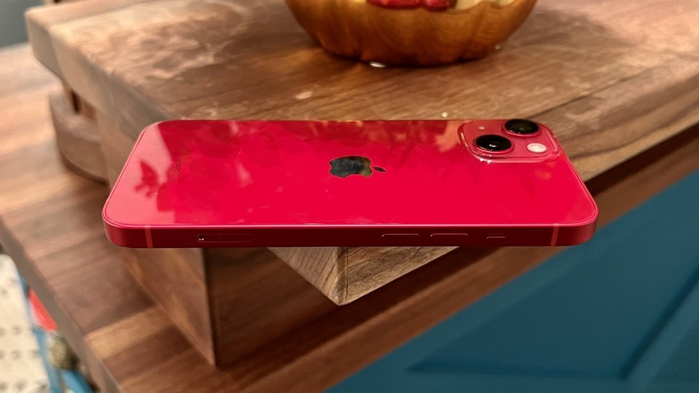

iPhone
Blog which explains everything about iPhone and its unique features
Author:
mark.chernomorchenko@student.tuke.sk
Content:
iPhone 13 Features
Design
Apple doesn't change its device designs but once every few years, so the iPhone 13 retains the iPhone 12 redesign. Each model features flat sides made from aluminum sandwiched between glass plates.
There aren't many design changes to differentiate the 2021 and 2020 iPhones beyond new color options and rearrangement of the camera module. However, the design differences are enough to require a new case since certain parts of the iPhone have moved. For example, the speaker grill is higher in the bezel now since the notch is slightly smaller.
The colors available for this generation are midnight, blue, starlight, pink, and PRODUCT (RED). Apple introduced a new green option during its March 2022 Apple event.
The first design change users will notice is the smaller notch. After years of using the same-sized notch to house the Face ID components, Apple has finally reduced its size by 20%.
Pros
- Still the same small & easy to hold design
- Improved cameras, again
- Fantastic performance from A15
- Still, that beautiful OLED display
Cons
- Screen size may be an issue for some
- No WiFi 6e
- Likely the last of its kind
Display
The iPhone 13 has a 6.1-inch screen, and the iPhone 13 mini has a 5.4-inch screen. They both use Apple's Ceramic Shield cover glass, which adds improved drop protection.
The Super Retina XDR display is 28% brighter up to 800 nits for regular content 1200 nits for HDR. In addition, the P3 color gamut and high pixel density mean text will pop, and photos and videos will appear sharper.
Apple reserved the new ProMotion variable refresh displays for its pro models. The standard iPhones retain the 60Hz refresh rate of previous generations.
True Depth Camera System
The True Depth camera system was redesigned so that it fits in a space that is 20% smaller. Ever since the iPhone X, users have asked for a smaller notch or its removal. Some Apple competitors adopted the notch design, then quickly jumped to hole-punch displays.
The Face ID system is unchanged from previous generations. It consists of six different sensors used to scan a user's face for biometric security. It includes the infrared camera, flood illuminator, proximity sensor, ambient light sensor, dot projector, and selfie camera.
The selfie camera also remains unchanged from the iPhone 12 models, though the A15 Bionic has an improved image signal processor, which will produce better images from the same camera. The iPhone 13 selfie camera is also capable of Cinematic Mode video and Photographic Styles for photos.
| Device Name | Height (mm/inches) | Width (mm/inches) | Depth (mm/inches) | Weight (grams/ounces) | Best iPhone |
|---|---|---|---|---|---|
| iPhone 13 mini | 131.5/5.18 | 624.2/2.53 | 7.65/0.230 | 1241/4.297 | iPhone 12 |
| iPhone 11 mini | 1321.5/5.18 | 64.2/22.53 | 72.65/02.30 | 1241/4.297 | |
| iPhone 12 | 1231.5/52.18 | 642.2/2.53 | 7.65/02.30 | 1441/4.397 | |
| Best | iPhone 13 mini | iPhone 11 mini | iPhone 12 | iPhone 13 mini | iPhone 13 mini |
| Best iPhone: | iPhone 13 mini | ||||